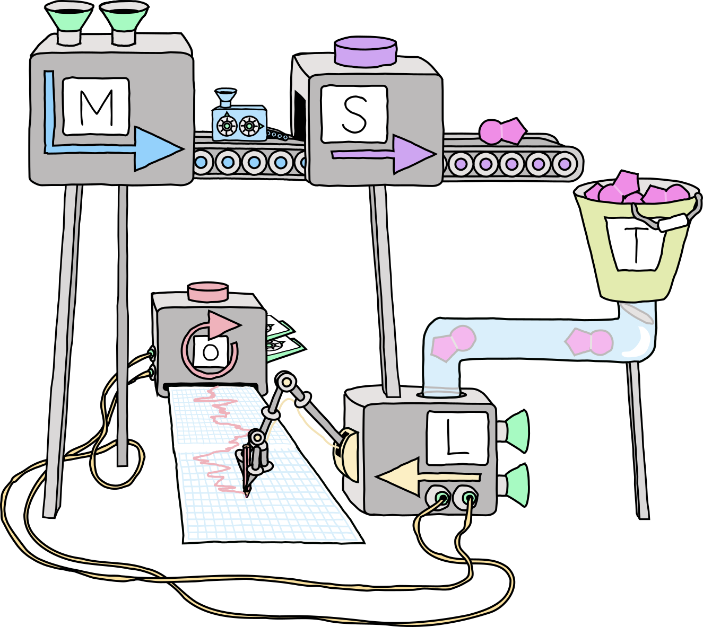

Table of Contents
This is the home page for Xanadu's quantum machine learning journal club. We will be working through an idiosyncratic syllbaus on classical ML, in the hopes it will contribute to our expertise in QML, offer new insights or research approaches, and generally enhance our quality of life.

Here is the schedule (to be populated):
| Date | Material | Guide | Scribe |
|---|---|---|---|
| Jan 9, 2024 | Admin | David Wakeham (DW) | DW |
| Jan 16, 2024 | ESL: §2.1-2.4 | DW | DW |
| (SVM: §1.1) |
Notes on past meetings are in chronological order below.
1 Admin
Reading: None.
Based on popular accord, we'll be focusing on the classical statistical approach to ML embodied in Elements of Statistical Learning, and the effective field theory paradigm of The Principles of Deep Learning. These are like the out-of-field examiner and the scary departmental theorist at your viva. These foci will not stop us from being eclectic, and dipping into resources on Geometric Deep Learning, Support Vector Machines or Deep Learning proper, as time, interest, and chunking limits permit.
Each week we will have designated reading, optional readings (in
parentheses in the schedule), and a guide or guides who have agreed (or been
voluntold) to talk us through the readings. There will
also be a scribe to take notes. Notes will be uploaded here. For any
corrections, email <7@heptar.ch>.
Finally, please be aware that notation will change as we look at different resources. It seems easier to be clear about this changes, and locally consistent, than to try and make everything uniform.
2 Overview of supervised learning
2.1 Statistical learning theory in brief
Reading: SVM: §1.1.
In statistical learning theory, our goal is to optimally approximate a function \(X \to Y\) using a training set of input-output samples, \[ \mathcal{D} = \{(x_{(1)}, y_{(1)}), \ldots, (x_{(n)}, y_{(n)})\}. \] We assume, further, that these are independently generated according to \[ P(x, y) = P_X(x) P(y|x), \] in other words, we choose \(x\) via the marginal distribution \(\mathbb{P}_X(\cdot)\) and \(y\) via the conditional distribution \(\mathbb{P}(\cdot|x)\). This latter distribution accomodates noise and stochasticity in the function \(f\). We assume both distributions are unknown. In particular, we're not doing parameteric estimation.
For simplicity, suppose \(Y \subseteq \mathbb{R}\). A loss function is a map \(L: X \times Y \times \mathbb{R} \to [0, \infty)\) which measures how well \(f\) interpolates the data point \((x, y)\), with smaller values of \(L(x, y, f(x))\) as \(f(x)\) gets closer to \(y\). The expected loss or risk for a given \(f: X\to Y\), over the joint distribution \(P(x, y)\), is \[ \mathcal{R}(f) = \int_{X\times Y} L(x, y, f(x))\, \mathrm{d}P(x, y). \] This is the average loss when we select an infinite number of pairs according to \(P(x, y)\). The empirical risk is the empirical approximation using our training pairs, \[ \mathcal{R}_{\mathcal{D}}(f) = \frac{1}{n}\sum_{i=1}^n L(x_{(i)}, y_{(i)}, f(x_{(i)})). \] As \(n \to \infty\), the law of large numbers implies that \(\mathcal{R}_{\mathcal{D}} \to \mathcal{R}\), i.e. the empirical risk converges in probability to the risk. So for many data points, we can approximate this expected loss well. How do we learn the approximating function \(f\) based on these ideas? The minimal risk for a given loss function and distribution is \[ \mathcal{R}^* = \inf_{f: X \to Y} \mathcal{R}(f). \] Learning methods uniquely associate functions to training data, \(\mathcal{D} \mapsto f_{\mathcal{D}}\). The hope is that they approximate the minimal risk, \(\mathcal{R}(f_{\mathcal{D}}) \approx \mathcal{R}^*\), at least as our training set gets asymptotically large. More formally, we say a learning method is universally consistent if \[ \lim_{n\to \infty} \mathcal{R}(f_{\mathcal{D}_n}) = \mathcal{R}^*, \] i.e. the function we learn minimizes risk.
In some ways, it's surprising such methods can exist for arbitrary distributions \(P\). In another way, it isn't, because we're only requiring asymptotic consistency, so we can gather enough data to map out \(P(x, y)\) to arbitrary accuracy. And indeed, the no free lunch (NFL) theorem states that, for any given speed of convergence (specified by a decreasing sequence), and any universally consistent learning method, there is some probability distribution which cannot be learned that quickly.
2.2 Linear regression
Reading: ESL: §2.3.1.
This is quite high concept, so let's dive into some specific methods for prediction, which also give us a sense of how statisticians think. One of the important tools in statistics is linear models aka linear regression. In the case our domain \(X = \mathbb{R}^p\), and \(Y = \mathbb{R}\), and we have reason to the inputs and outputs are linearly related, we can write \[ f(x) = \hat{\beta}_0 + \sum_{j=1}^p x_j\hat{\beta}_j = x^T \hat{\beta} \] where \(x_j\) is the \(j\)-th component of the vector \(x\), and in the second equation, we have padded out \(x\) with a \(1\) in the zeroth component. The coefficients \(\hat{\beta}\) form a vector of \(p+1\) parameters (with the hat reminding us they are to be estimated), but we can extend this to a matrix for \(Y = \mathbb{R}^k\). For the moment, let's keep \(k=1\), and absorb the padding into \(p\).
As before, we would like to pick the best \(\beta\) for our data using a loss function. A natural and in some sense optimal choice for linear models is called the residual sum of squares, where the loss function is just squared distance: \[ L(x, y, f(x)) = |y - f(x)|^2 = |y - x^T \beta|^2. \] Let \(\mathbf{y} = (y_{(i)})^T\) be a column vector of \(n\) training outputs, and \(\mathbf{X} = (x_{(i)}^T)\) an \(n\times p\) matrix of training inputs. The empirical risk can then be written \[ \mathcal{R}_{\mathcal{D}}(\beta) = \frac{1}{n}\sum_{i=1}|y_{(i)} - x_{(i)}^T\beta|^2 = \frac{1}{n}(\mathbf{y} - \mathbf{X}\beta)^T (\mathbf{y} - \mathbf{X}\beta). \] We can solve this for the optimal \(\beta\), simply by differentiating with respect to \(\beta\): \[ \partial_\beta \mathcal{\mathcal{R}_{\mathcal{D}}(\beta)} = \frac{1}{n}\left[\mathbf{X}^T\left(\mathbf{X}\beta -\mathbf{y} \right) + \left(\mathbf{X}\beta -\mathbf{y} \right)^T \mathbf{X}\right] = \frac{2}{n}\mathbf{X}^T\left(\mathbf{X}\beta -\mathbf{y}\right), \] where the last equality follows from the fact that a scalar is its own transpose. More carefully, we can differentate either component-wise, or with respect to both \(\beta\) and \(\beta^T\) as formal variables. Assuming \(\mathbf{X}^T\mathbf{X}\) has an inverse, we can set this to zero and solve for \(\beta\): \[ \mathbf{X}^T\left(\mathbf{X}\beta -\mathbf{y}\right) = \mathbf{X}^T\mathbf{X}\beta -\mathbf{X}^T\mathbf{y} = 0 \quad \Longrightarrow \quad \hat{\beta} = (\mathbf{X}^T\mathbf{X})^{-1}\mathbf{X}^T\mathbf{y}. \] Again, the hat tells us we will use this as our estimate.
3 References
- Elements of Statistical Learning (2008), Hastie, Tibshirani and Friedman. [ESL]
- The Principles of Deep Learning (2021), Roberts and Yaida. [PDL]
- Geometric Deep Learning (2021), Bronstein, Bruna, Cohen, and Veličković. [GDL]
- Support Vector Machines (2008), Steinwart and Christmann. [SVM]
- Deep Learning (2015), Aaron Courville, Ian Goodfellow, and Yoshua Bengio. [DLB]